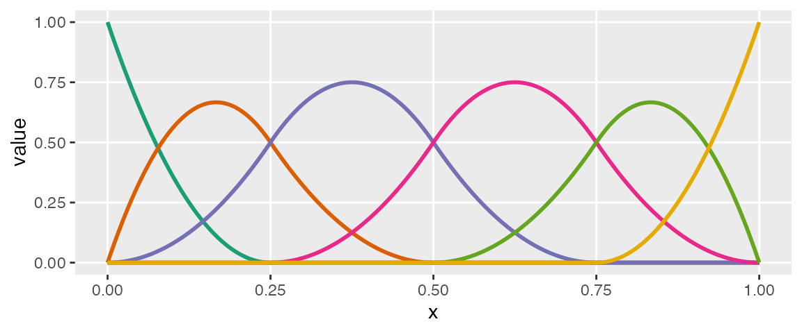
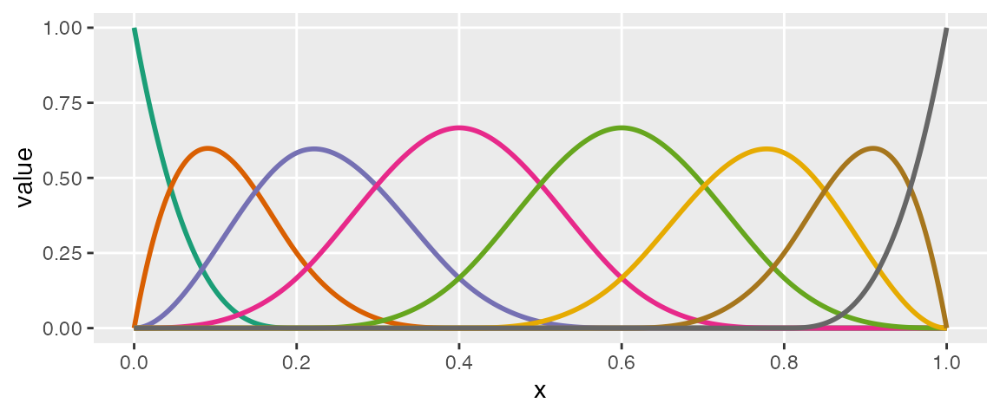
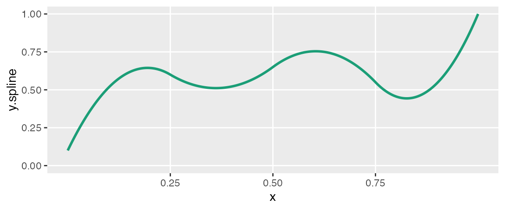
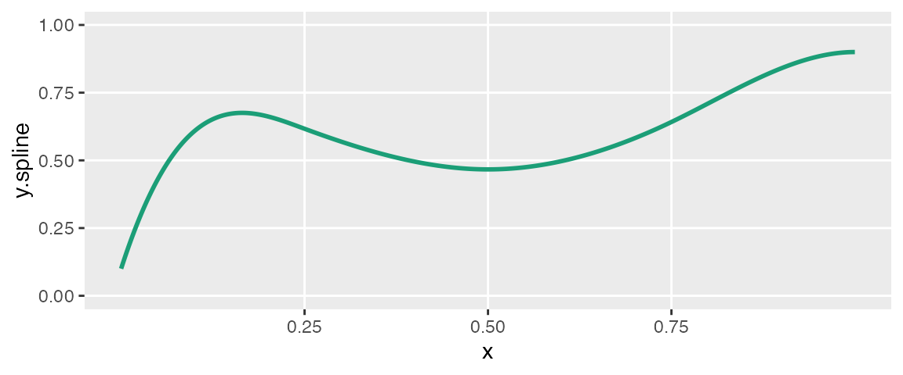
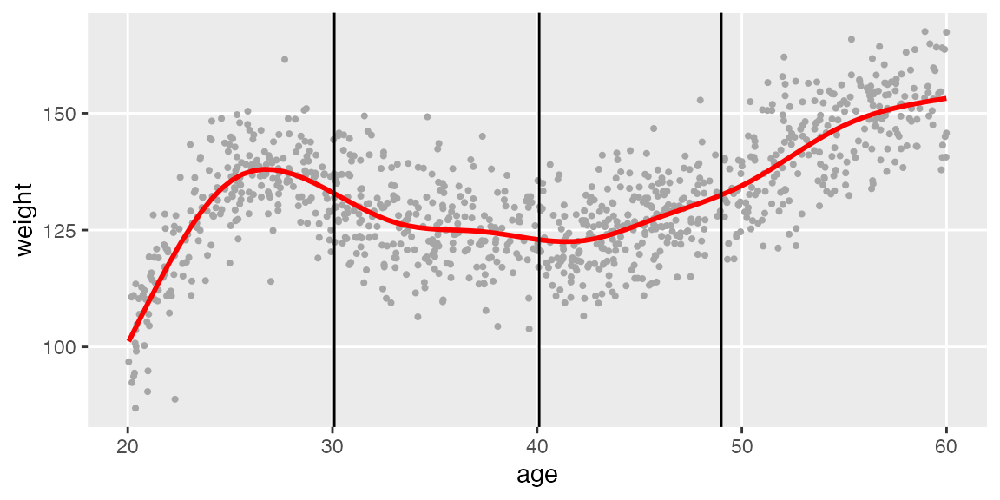
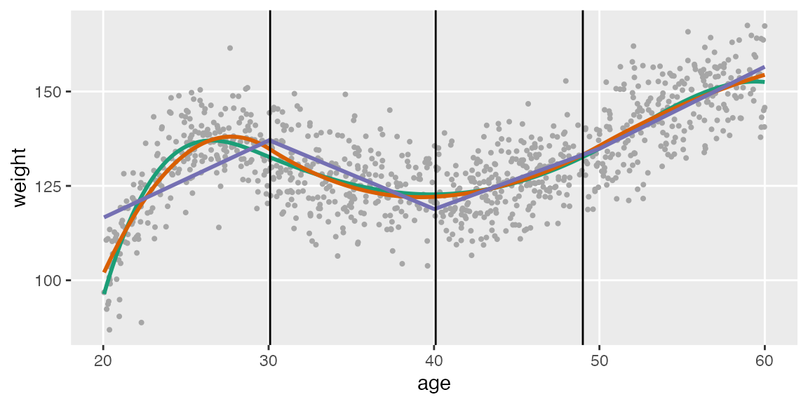

Sometimes (usually?) relationships between variables are non-linear. simstudy can already accommodate that. But, if we want to explicitly generate data from a piece-wise polynomial function to explore spline methods in particular, or non-linear relationships more generally. There are three functions that facilitate this: viewBasis, viewSplines, and genSpline. The first two functions are more exploratory in nature, and just provide plots of the B-spline basis functions and the splines, respectively. The third function actually generates data and adds to an existing data.table.
The shape of a spline is determined by three factors: (1) the cut-points or knots that define the piecewise structure of the function, (2) the polynomial degree, such as linear, quadratic, cubic, etc., and (3) the linear coefficients that combine the basis functions, which is contained in a vector or matrix theta.
First, we can look at the basis functions, which depend only the knots and degree. The knots are specified as quantiles, between 0 and 1:


The splines themselves are specified as linear combinations of each of the basis functions. The coefficients of those combinations are specified in theta. Each individual spline curve represents a specific linear combination of a particular set of basis functions. In exploring, we can look at a single curve or multiple curves, depending on whether or not we specify theta as a vector (single) or matrix (multiple).
knots <- c(0.25, 0.5, 0.75) # number of elements in theta: length(knots) + degree + 1 theta1 = c(0.1, 0.8, 0.4, 0.9, 0.2, 1.0) viewSplines(knots, degree = 2, theta1)

theta2 = matrix(c(0.1, 0.2, 0.4, 0.9, 0.2, 0.3, 0.6, 0.1, 0.3, 0.3, 0.8, 1.0, 0.9, 0.4, 0.1, 0.9, 0.8, 0.2, 0.1, 0.6, 0.1), ncol = 3) theta2
## [,1] [,2] [,3]
## [1,] 0.1 0.1 0.1
## [2,] 0.2 0.3 0.9
## [3,] 0.4 0.3 0.8
## [4,] 0.9 0.8 0.2
## [5,] 0.2 1.0 0.1
## [6,] 0.3 0.9 0.6
## [7,] 0.6 0.4 0.1viewSplines(knots, degree = 3, theta2)

We can generate data using a predictor in an existing data set by specifying the knots (in terms of quantiles), a vector of coefficients in theta, the degree of the polynomial, as well as a range
ddef <- defData(varname = "age", formula = "20;60", dist = "uniform") theta1 = c(0.1, 0.8, 0.6, 0.4, 0.6, 0.9, 0.9) knots <- c(0.25, 0.5, 0.75)
Here is the shape of the curve that we want to generate data from:
viewSplines(knots = knots, theta = theta1, degree = 3)

Now we specify the variables in the data set and generate the data:
set.seed(234) dt <- genData(1000, ddef) dt <- genSpline(dt = dt, newvar = "weight", predictor = "age", theta = theta1, knots = knots, degree = 3, newrange = "90;160", noise.var = 64)
Here’s a plot of the data with a smoothed line fit to the data:
ggplot(data = dt, aes(x=age, y=weight)) + geom_point(color = "grey65", size = 0.75) + geom_smooth(se=FALSE, color="red", size = 1, method = "auto") + geom_vline(xintercept = quantile(dt$age, knots)) + theme(panel.grid.minor = element_blank())

Finally, we will fit three different spline models to the data - a linear, a quadratic, and a cubic - and plot the predicted values:
# normalize age for best basis functions dt[, nage := (age - min(age))/(max(age) - min(age))] # fit a cubic spline lmfit3 <- lm(weight ~ bs(x = nage, knots = knots, degree = 3, intercept = TRUE) - 1, data = dt) # fit a quadtratic spline lmfit2 <- lm(weight ~ bs(x = nage, knots = knots, degree = 2), data = dt) # fit a linear spline lmfit1 <- lm(weight ~ bs(x = nage, knots = knots, degree = 1), data = dt) # add predicted values for plotting dt[, pred.3deg := predict(lmfit3)] dt[, pred.2deg := predict(lmfit2)] dt[, pred.1deg := predict(lmfit1)] ggplot(data = dt, aes(x=age, y=weight)) + geom_point(color = "grey65", size = 0.75) + geom_line(aes(x=age, y = pred.3deg), color = "#1B9E77", size = 1) + geom_line(aes(x=age, y = pred.2deg), color = "#D95F02", size = 1) + geom_line(aes(x=age, y = pred.1deg), color = "#7570B3", size = 1) + geom_vline(xintercept = quantile(dt$age, knots)) + theme(panel.grid.minor = element_blank())
